Six-sprint promotion of mature pieces from Daylight, Margin, ARIA, and AIR-Bot back into the cosmo starter, so future Monument Labs projects begin where current projects ended up.
6 of 6 sprints complete Branch cosmo-uplift, not merged, not pushed.
Live-data verification (signup → onboarding → org creation, real Stripe round-trip, end-to-end chat stream) is gated on a clone wiring its own Supabase + OpenAI keys. The chrome and wiring shown here were captured against placeholder env values via a temporary ?_render_chrome=1 middleware bypass that is reverted before each sprint commit.
auth.global.ts middleware preserves the ?redirect= query.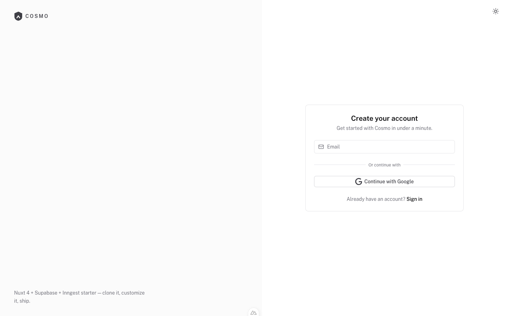
handle_new_user trigger from 001_initial.sql creates the profiles row server-side.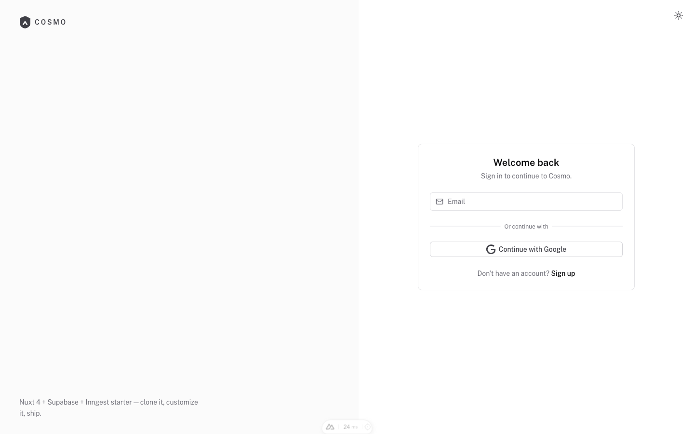
/app while logged out bounces to /auth/login?redirect=/app. Cosmo doesn't have a literal /app/index route — /app is the index.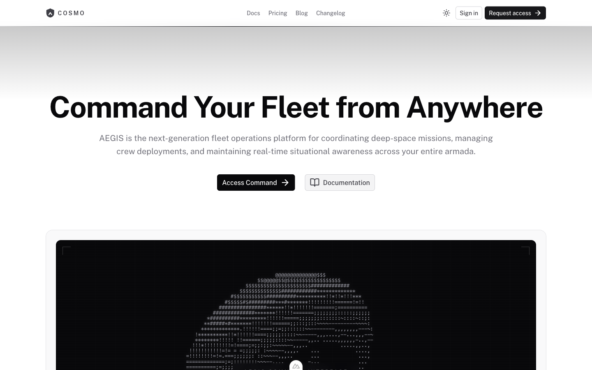
package.json, app.config.ts, AppLogo.vue, AppFooter.vue, OG card, app.vue titleTemplate.Saas component name, breaking defineOgImageComponent('Saas') across blog, pricing, changelog, docs.HomeSales, HomeStats, editor/CollaborationUsers, editor/ImageUploadNode, useEditorMentions trace back to the initial commit. app/pages/app/ai.vue's errors were resolved in Sprint 6.npm install && npm run dev boots; both Nuxt and Inngest CLI start.npx nuxi typecheck clean for Sprint 1's surface./app logged out redirects to /auth/login?redirect=/app.UserMenu shows the real authed user via useProfile() — no more 'A. Shepard' hardcode.auth.users row → land on /app. Pending live Supabase project.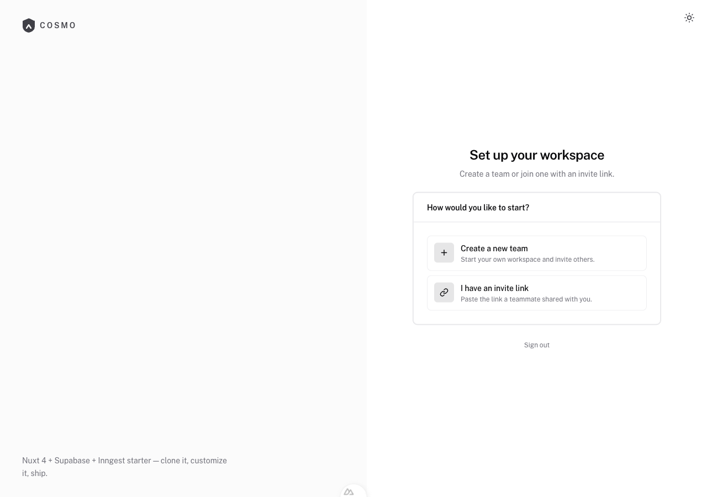
needsOnboarding watcher in dashboard.vue.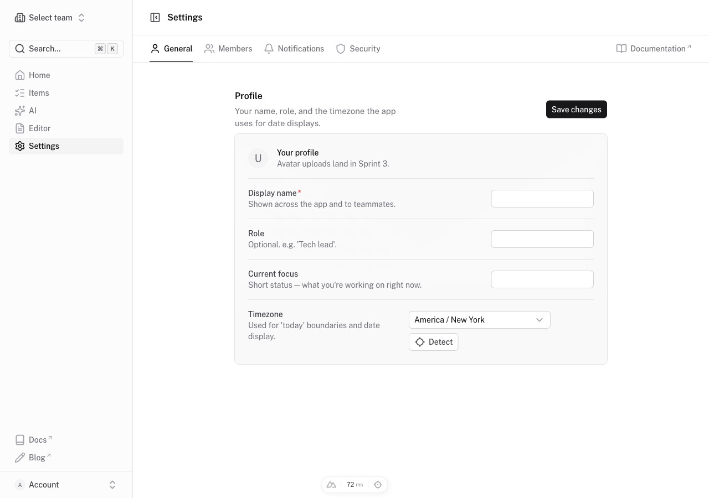
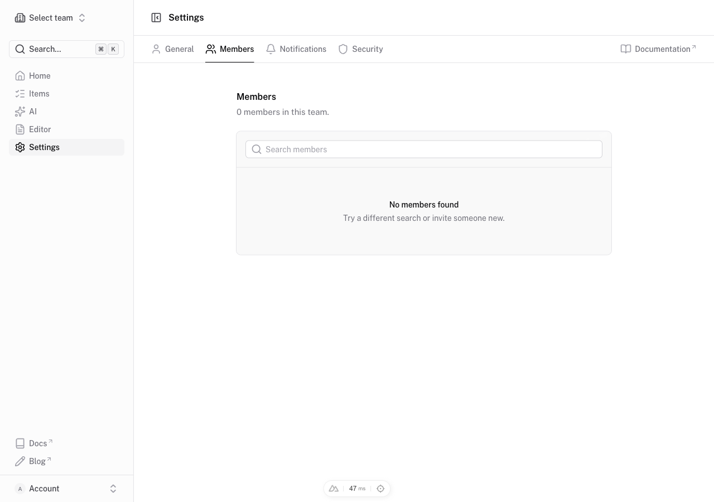
/auth/invitations/accept (auth layout — fresh users with no org need to land somewhere they can authenticate, not somewhere that requires an active org).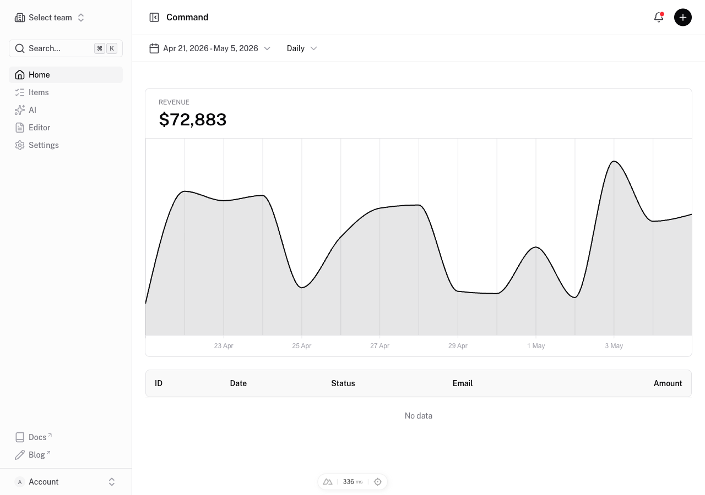
useNavigation().mainNav with command palette wired to commandGroups. Demo customers/inbox links hidden until a project opts back in.requireActiveOrg + requireOrgMember split. ARIA used a single helper that did both jobs implicitly. Cosmo separates: explicit org-scoped routes vs "current org from cookie" routes.002_orgs_and_invitations.sql is fully idempotent. Every create policy preceded by a matching drop policy if exists./api/app/profile uses PATCH, not PUT. Partial-update semantics; matches Daylight.npx nuxi typecheck clean for Sprint 2's surface.useNavigation; settings tabs render from real composables./onboarding. Pending live Supabase.invitations. Pending live Supabase.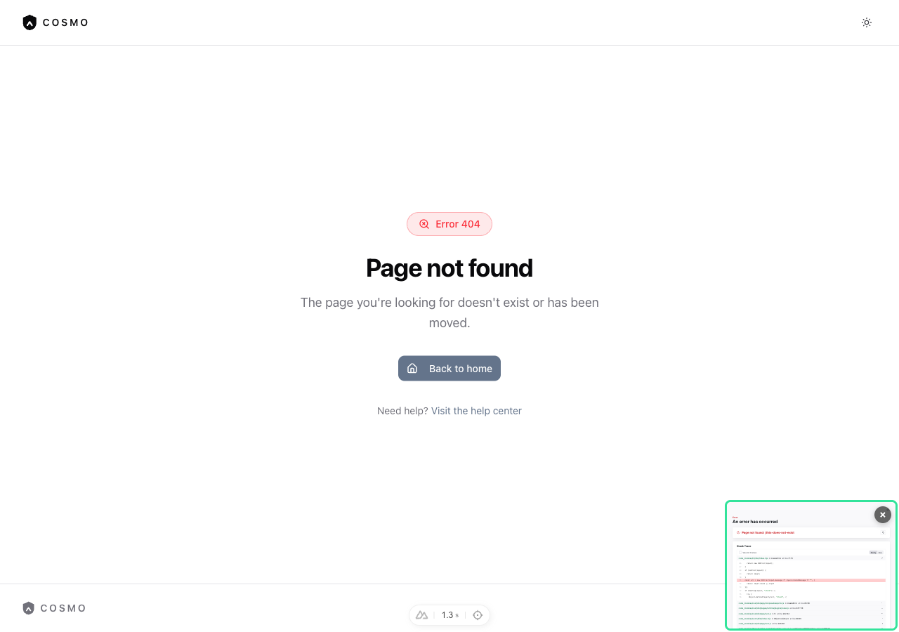
createError.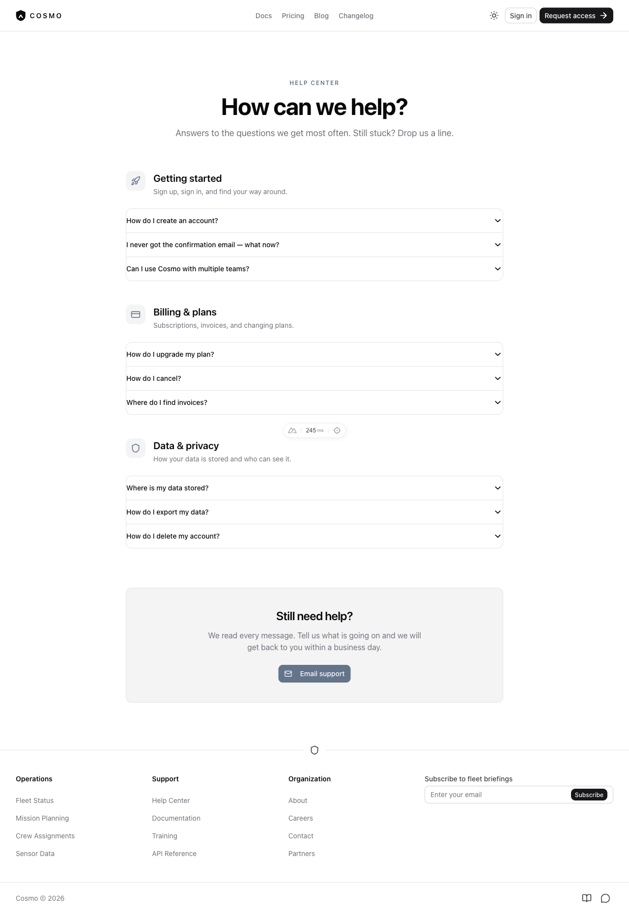
mailto: contact card. Added to auth.global.ts's public-routes allowlist so logged-out users can reach it.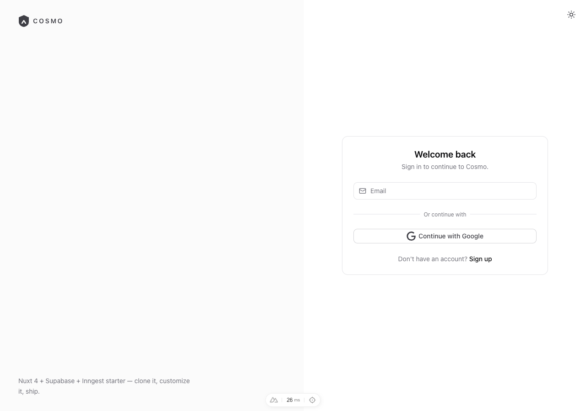
renderEditorialEmail takes a brand arg. Daylight's hardcoded brand tokens were generalized; cosmo defaults to slate accent / system fonts / "Cosmo" / hello@example.com.default-chat, default-fast, title-gen, default-reasoning — Daylight's task-specific keys (journalExtract, voiceExtract) would have been dead entries in cosmo.page-viewed.global.ts by default. Cosmo ships logEvent() primitive + a commented-out example middleware (page-viewed.example.ts) projects copy in if they want it.AI_GATEWAY_API_KEY presence — when set, the AI SDK auto-routes via the gateway-style id; when not, the OpenAI prefix is stripped.npx nuxi typecheck clean for Sprint 3's surface.app/error.vue./help renders with three FAQ categories and contact card.MODELS registry resolves keys to model ids; chat.post.ts/completion.post.ts source ids from the registry.useAnalytics().logEvent() writes a row in analytics.events. Pending live Supabase.RESEND_ALLOW_SEND=1. Pending Resend account; smoke happens on Sprint 4 dev-tools.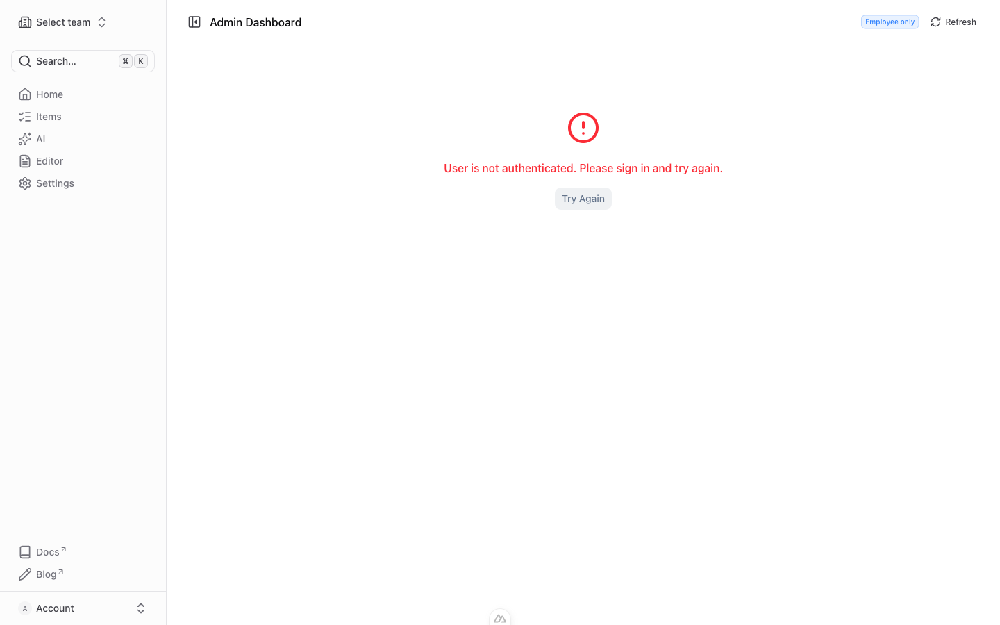
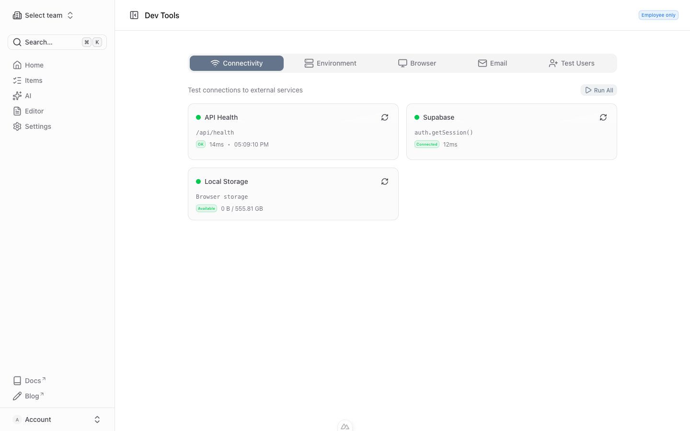
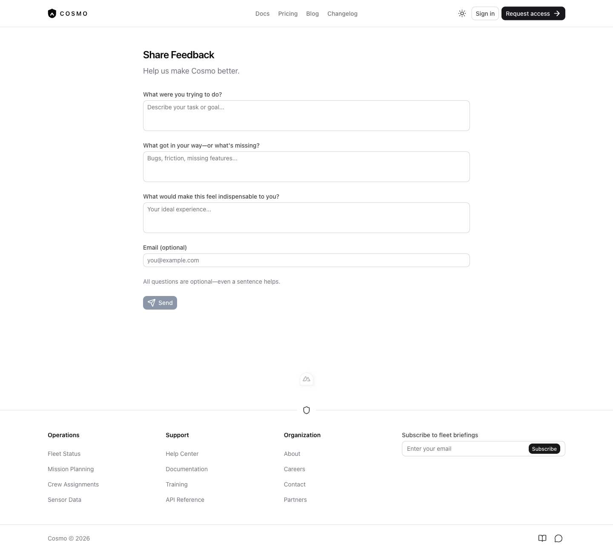
page_context. FeedbackForm.vue is mounted wherever a project wants — cosmo doesn't ship a dedicated /feedback page.items, not notebooks. Cosmo's 001_initial.sql has items as the generic resource. Funnel renamed accordingly.auth.admin.listUsers. Cosmo profiles have no email column; admin stats and test-user listings build a Map<userId, email> at query time.TEST_USER_EMAIL_DOMAIN env var. Margin hardcodes monumentlabs.io; cosmo defaults to it but lets projects override.send-test-email recipient is always the calling employee. No client-controlled to field. The sendEmail employee-skip guard means a real send won't go out from this button — it returns skipped_employee, which is the truthful state and is surfaced in the toast.npx nuxi typecheck clean for Sprint 4's surface./app/admin + /app/dev-tools wired with employee page middleware; APIs guarded by requireEmployee.FeedbackForm renders cleanly; anon + authed paths both wired.is_employee = false.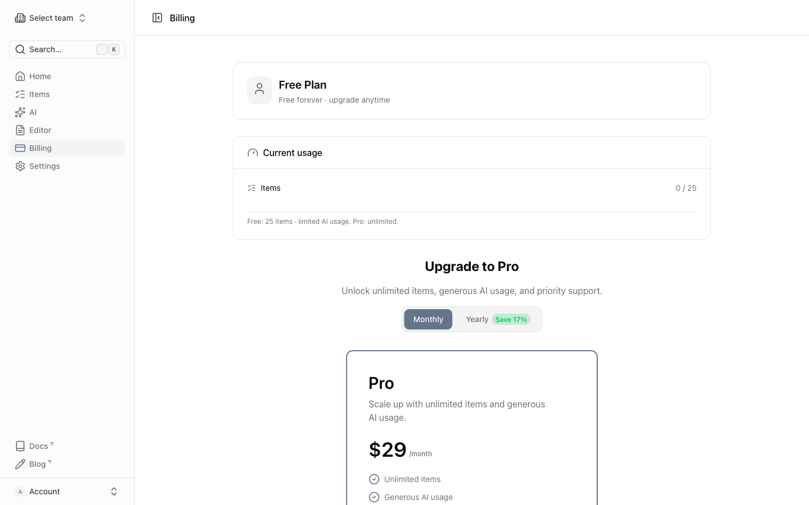
UPricingPlan. Pricing data from app/composables/usePlans.ts mirrors the shape of content/2.pricing.yml so marketing and authed views stay in sync.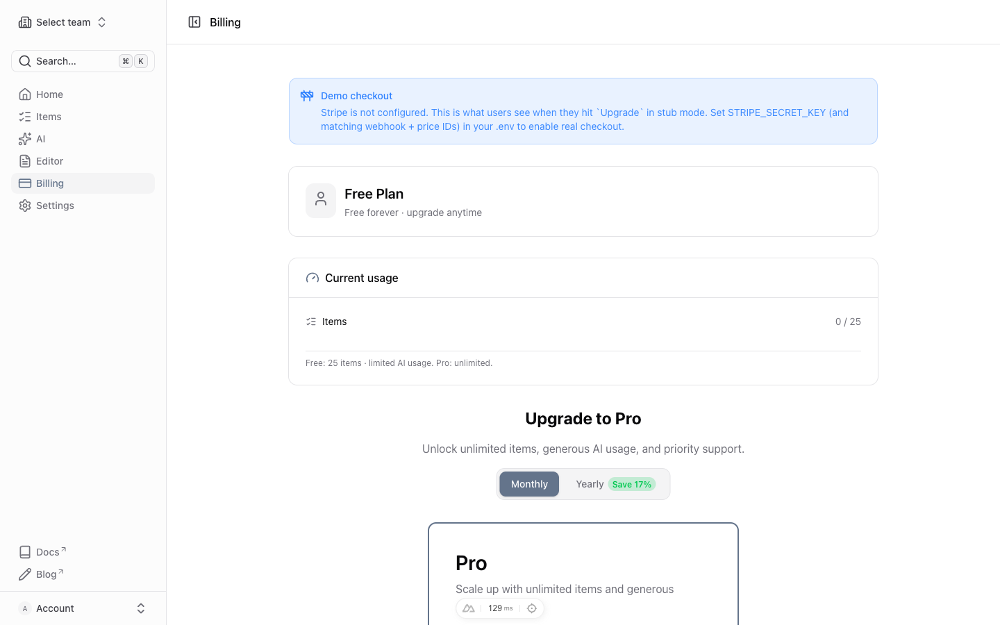
?demo=checkout query: inline blue "Demo checkout — Stripe is not configured. This is what users see when they hit Upgrade in stub mode. Set STRIPE_SECRET_KEY (and matching webhook + price IDs) in your .env to enable real checkout."$ curl -X POST -H "Content-Type: application/json" -d '{}' \
http://localhost:3000/api/stripe/webhook
{ "ok": true, "stub": true }
$ curl -X POST -H "Content-Type: application/json" -d '{}' \
http://localhost:3000/api/stripe/create-checkout-session
401 → "User is not authenticated. Please sign in and try again."
# Correct: requireUserId guards the route before issuing the demo URL.
organization_id; Daylight: user_id. Cosmo follows Margin because Sprint 2's multi-tenancy is org-first — a user upgrades the active org's plan.items, ai_tokens, storage_bytes instead of Margin's notebook-specific resources. Other resources are commented placeholders inside 007_usage_tracking.sql for projects to extend.profiles.test_tier column for the employee tier-switcher. Smallest-possible thing that lets getUserTier return a stub-mode override. No separate dev_tier_overrides table.stripe server SDK is a cosmo dep; @stripe/stripe-js is not. Server SDK lazy-imports inside the live branch; client SDK is project-installs-on-flip. EmbeddedCheckout.vue falls back to the demo banner if the dep is missing.concurrently --names nuxt,inngest. Projects that flip to live add stripe listen --forward-to localhost:3000/api/stripe/webhook themselves; recipe is documented in root CLAUDE.md.npx nuxi typecheck clean for Sprint 5's surface.npm run dev boots clean; isStripeConfigured() branches correctly with and without STRIPE_SECRET_KEY; await import('stripe') resolves with a fake key./app/billing renders Free plan card + usage bar in stub mode.?demo=checkout renders the inline demo-checkout banner.POST /api/stripe/webhook returns { ok: true, stub: true }; checkout/portal correctly require auth before issuing the demo URL.UpgradePrompt at limits. Pending live Supabase + a free-tier user with > 25 items.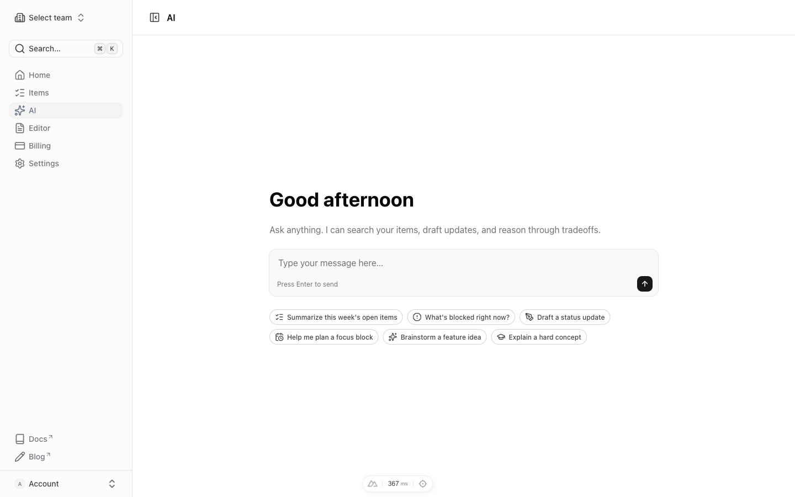
/app/chat: greeting (time-aware), 6 generic suggestion chips, prompt input wearing [view-transition-name:chat-prompt]. Submit awaits POST /api/chats before navigateTo('/app/chat/<id>') fires; same view-transition is on the [id].vue prompt so the navigate animates smoothly./app/chat. loading.value = true blocks suggestion buttons + submit.await $fetch('/api/chats', { method: 'POST', body: { id, message } }) — server inserts the chat row + first user message.refreshNuxtData('chats') — sidebar picks up the new chat.await navigateTo('/app/chat/<id>').[id].vue hydrates from useFetch('/api/chats/<id>'), builds the Chat with the persisted user message.onMounted sees messages.length === 1 && role === 'user' → calls chat.regenerate() to kick off the assistant turn.[view-transition-name:chat-prompt] keeps the prompt locked across the navigation. Submit is disabled while loading so a double-tap can't create two chats./app/chat. Template puts it at /; cosmo's marketing layout owns /, so the chat empty state is /app/chat/index.vue.hub:db + Drizzle with a normalized messages table. Cosmo follows AIR-Bot: one row per thread, full UIMessage[] in messages jsonb. Simpler RLS, simpler hydration.onFinish. Re-fetches latest, builds existingIds, filters responseMessages to unseen — re-emitted parts don't duplicate.UEditor for assistant markdown. Matches AIR-Bot. Template uses a custom ChatComark; cosmo already ships TipTap-via-UEditor, so no new dep.createAITools skips registration during onboarding rather than throwing — keeps the chat surface usable for fresh users./api/app/ai/chat.post.ts deleted. Nothing referenced it post-cutover; leaving it would have invited drift between two streaming endpoints.npx nuxi typecheck — the four pre-existing app/pages/app/ai.vue errors are gone (file is now a 9-line redirect).npm run dev boots clean./app/chat empty state renders: greeting, 6 suggestion chips, prompt with view-transition./app/ai redirects to /app/chat.GET /api/chats + POST /api/chats return 401 without auth (requireUserId).008_chats.sql idempotent (drop legacy + create-if-not-exists).npm install + cp .env.example .env + fill in SUPABASE_URL, SUPABASE_ANON_KEY, SUPABASE_SERVICE_ROLE_KEY, OPENAI_API_KEY. Replace {{PROJECT_REF}} in .cursor/mcp.json.001–008 against the new Supabase project.npm run dev — Nuxt + Inngest both boot. Visit /auth/signup, sign up./onboarding; create an org. Land on /app with the org context populated; TeamsMenu shows the org./app/billing — Free plan, usage bar, Pro upgrade card. "Upgrade" shows the demo-checkout banner with the stub toast./app/chat — empty state with greeting + suggestion grid. Submit a prompt; navigation animates to /app/chat/<id> with the prompt locked in place; assistant streams.createError. Help page reachable at /help. Analytics events flow to analytics.events.profiles.is_employee = true on a user → [Internal] nav group surfaces with /app/admin + /app/dev-tools. Non-employees still get a 404 on those routes.STRIPE_SECRET_KEY + price/webhook IDs and running stripe listen; nothing else changes.